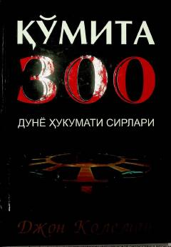

Q3Dunyoni boshqarishga intilayotgan yashirin tashkilotlar va ularning global rejalari haqidagi tahliliy asar.
Ushbu kitobda muallif dunyoni boshqarishga intilayotgan yashirin tashkilotlar, xususan, 'Qoʻmita 300' faoliyati va ularning global rejalari haqida soʻz yuritadi. Asarda dunyo elitalarining insoniyat ustidan nazorat oʻrnatish va aholi sonini qisqartirishga qaratilgan strategiyalari tahlil qilinadi.